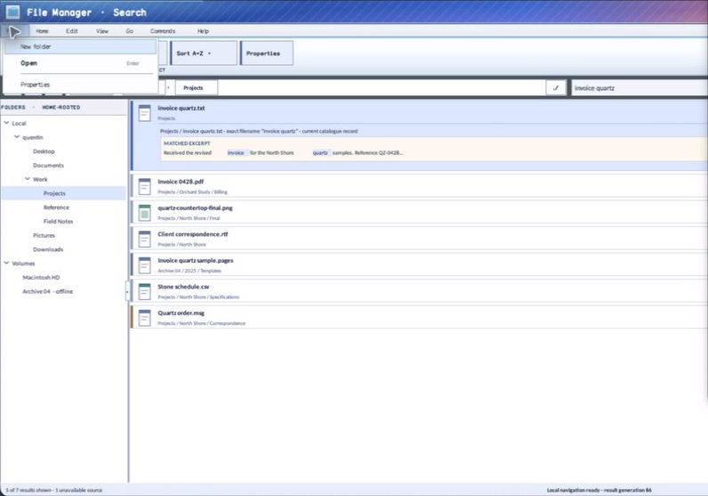

class · visual
MenuStrip
MenuStrip is the retained top-level menu coordinator. It lays out root items, tracks hot and active identities, transfers navigation across an owned ContextMenu, supports mnemonic and semantic entry, and exposes caller-controlled item padding while keeping invocation and open-state events ordered.
Visual evidence

Ownership and hierarchy
- Hierarchy
- Control → MenuStrip
- Declaration
- include/gui_forms/controls/menu_strip/menu_strip.hpp:39
- Definition
- src/controls/menu/menu_strip/menu_strip.cpp
Declared methods
MenuStrip public
explicit MenuStrip(StableId stable_id)Constructs a focusable menu bar and its lifetime-bound ContextMenu coordinator.
~MenuStrip public
~MenuStrip() overrideCloses transient state and disconnects owned menu subscriptions before destruction.
items public
[[nodiscard]] const std::vector<MenuStripItemSpec>& items() const noexceptReturns the authored top-level menu records and submenu trees.
set_items public
void set_items(std::vector<MenuStripItemSpec> items)Validates and replaces menu topology, closes stale transient state, and refreshes geometry and semantics.
use_mnemonic public
[[nodiscard]] bool use_mnemonic() const noexceptReports whether ampersand-style access keys participate in activation and painting.
set_use_mnemonic public
void set_use_mnemonic(bool value)Toggles mnemonic parsing, remeasures labels, and refreshes keyboard routing.
item_padding public
[[nodiscard]] double item_padding() const noexceptReturns the logical horizontal inset applied around each top-level label.
set_item_padding public
void set_item_padding(double padding)Validates bounded padding and invalidates menu measurement, paint, and hit testing.
active_index public
[[nodiscard]] std::optional<std::size_t> active_index() const noexceptReturns the currently open top-level item index, if any.
open public
bool open(std::size_t index)Validates and opens an enabled top-level item's submenu with root-navigation handoff.
close public
void close() noexceptCloses the owned ContextMenu and clears active and hot root state.
is_open public
[[nodiscard]] bool is_open() const noexceptReports whether the owned menu popup currently has transient ownership.
item_invoked public
[[nodiscard]] Event<const MenuStripInvocation&>& item_invoked() noexceptReturns the event forwarding a committed leaf invocation from the owned context menu.
open_changed public
[[nodiscard]] Event<std::optional<std::size_t>>& open_changed() noexceptReturns the event forwarding real changes to the menu strip's open state.
measure public
[[nodiscard]] Size measure(Size available) overrideComputes desired menu-bar width from labels, mnemonics, font metrics, and item padding.
on_paint public
void on_paint(Painter& painter, Rect local_damage) overrideRecords menu-bar background, hot/active states, labels, access-key cues, disabled state, and focus.
on_pointer public
void on_pointer(PointerEvent& event) overrideHandles hover transfer, root switching, outside routing, press qualification, and dismissal.
on_key public
void on_key(KeyEvent& event) overrideImplements root traversal, open/close, submenu handoff, activation, and Escape behavior.
on_focus_changed public
void on_focus_changed(bool focused) overrideClears transient hot state when focus leaves unless the owned popup retains the interaction scope.
semantic_descriptor public
[[nodiscard]] SemanticDescriptor semantic_descriptor() const overrideProjects the control as a menu bar with expanded state.
semantic_virtual_children public
[[nodiscard]] std::vector<SemanticNode> semantic_virtual_children() const overrideExposes stable root menu items with enabled, focused, and expanded metadata.
on_semantic_child_action public
bool on_semantic_child_action(std::string_view stable_id, SemanticAction action, std::string_view value) overrideMaps virtual focus, expand, collapse, and press to the normal menu coordinator.
on_dispose protected
void on_dispose() noexcept overridePublic MenuStrip operation. Its exact signature is inventoried here; follow the linked implementation for callback order and failure behavior.
mnemonic_matches protected
[[nodiscard]] bool mnemonic_matches( char32_t character) const noexcept overrideReports the current mnemonic matches value without mutation.
process_mnemonic_self protected
bool process_mnemonic_self(char32_t character) overridePublic MenuStrip operation. Its exact signature is inventoried here; follow the linked implementation for callback order and failure behavior.
item_bounds private
[[nodiscard]] std::vector<Rect> item_bounds() constReports the current item bounds value without mutation.
index_at private
[[nodiscard]] std::optional<std::size_t> index_at(Point window_point) constReports the current index at value without mutation.
next_enabled private
[[nodiscard]] std::optional<std::size_t> next_enabled( std::size_t start, int direction) constReports the current next enabled value without mutation.
navigate_root private
bool navigate_root(int direction)Public MenuStrip operation. Its exact signature is inventoried here; follow the linked implementation for callback order and failure behavior.
handle_popup_pointer private
bool handle_popup_pointer(const PointerEvent& event)Public MenuStrip operation. Its exact signature is inventoried here; follow the linked implementation for callback order and failure behavior.
set_hot private
void set_hot(std::optional<std::size_t> index)Synchronously updates the retained hot property. Validation, typed invalidation, and notifications are defined by the implementation.